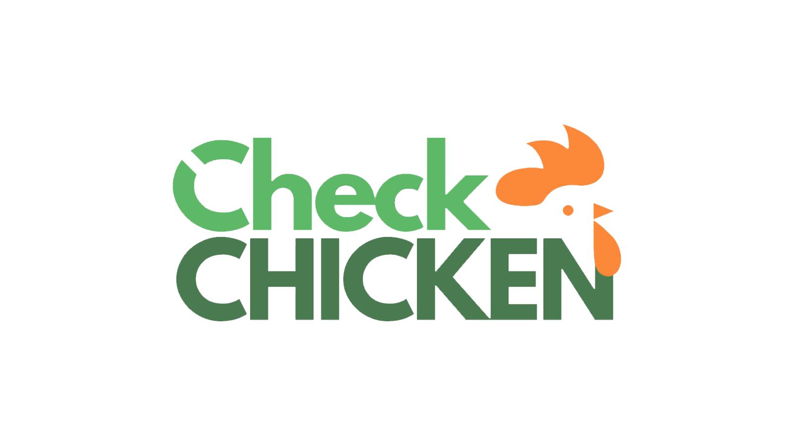
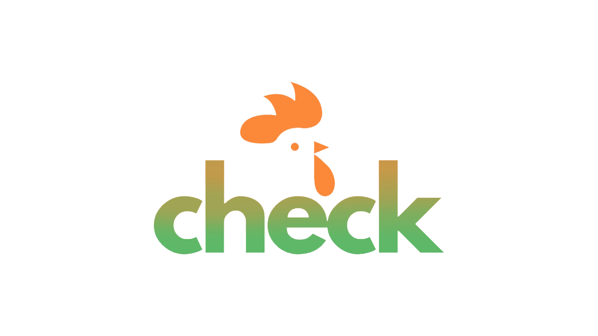

Informe a quantidade de lotes do seu aviário:
Informe a quantidade de galinhas por lote:
Informe o preço da unidade de galinha do seu lote:
Informe a taxa de mortalidade dos seus lotes:
Qual o custo de produção mensal por galinha: (Ração, água, ...)
Quanto é gasto em custos adicionais mensais: (Veterinário, vacinas, cuidados, ...)
FAZER SIMULAÇÃO

